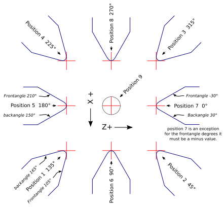
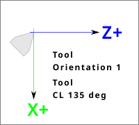
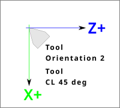
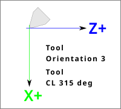
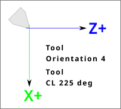
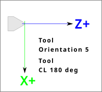
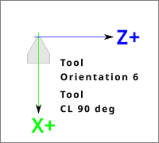
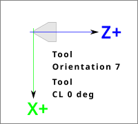
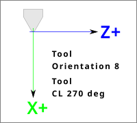

This chapter will provide information specific to lathes.
1. Lathe Mode
If your CNC machine is a lathe, there are some specific changes you will probably want to make to your INI file in order to get the best results from LinuxCNC.
If you are using the AXIS display, have AXIS display your lathe tools properly. See the INI Configuration section for more details.
To set up AXIS for Lathe Mode.
[DISPLAY]
# Tell the AXIS GUI our machine is a lathe.
LATHE = TRUELathe Mode in AXIS does not set your default plane to G18 (XZ). You must program that in the preamble of each G-code file or (better) add it to your INI file, like this:
[RS274NGC]
# G-code modal codes (modes) that the interpreter is initialized with
# on startup
RS274NGC_STARTUP_CODE = G18 G20 G90If your using GMOCCAPY then see the the GMOCCAPY Lathe section.
2. Lathe Tool Table
The "Tool Table" is a text file that contains information about each tool. The file is located in the same directory as your configuration and is called "tool.tbl" by default. The tools might be in a tool changer or just changed manually. The file can be edited with a text editor or be updated using G10 L1,L10,L11. There is also a built-in tool table editor in the AXIS display. The maximum number of entries in the tool table is 56. The maximum tool and pocket number is 99999.
Earlier versions of LinuxCNC had two different tool table formats for mills and lathes, but since the 2.4.x release, one tool table format is used for all machines. Just ignore the parts of the tool table that don’t pertain to your machine, or which you don’t need to use. For more information on the specifics of the tool table format, see the Tool Table Section.
3. Lathe Tool Orientation
The following figure shows the lathe tool orientations with the center line angle of each orientation and info on FRONTANGLE and BACKANGLE.
The FRONTANGLE and BACKANGLE are clockwise starting at a line parallel to Z+.

In AXIS the following figures show what the Tool Positions look like, as entered in the tool table.
   
   
4. Tool Touch Off
When running in lathe mode in AXIS you can set the X and Z in the tool table using the Touch Off window. If you have a tool turret you normally have Touch off to fixture selected when setting up your turret. When setting the material Z zero you have Touch off to material selected. For more information on the G-codes used for tools see M6, Tn, and G43. For more information on tool touch off options in AXIS see Tool Touch Off.
4.1. X Touch Off
The X axis offset for each tool is normally an offset from the center line of the spindle.
One method is to take your normal turning tool and turn down some stock to a known diameter. Using the Tool Touch Off window enter the measured diameter (or radius if in radius mode) for that tool. Then using some layout fluid or a marker to coat the part bring each tool up till it just touches the dye and set its X offset to the diameter of the part used using the tool touch off. Make sure any tools in the corner quadrants have the nose radius set properly in the tool table so the control point is correct. Tool touch off automatically adds a G43 so the current tool is the current offset.
A typical session might be:
-
Home each axis if not homed.
-
Set the current tool with Tn M6 G43 where n is the tool number.
-
Select the X axis in the Manual Control window.
-
Move the X to a known position or take a test cut and measure the diameter.
-
Select Touch Off and pick Tool Table then enter the position or the diameter.
-
Follow the same sequence to correct the Z axis.
Note: if you are in Radius Mode you must enter the radius, not the diameter.
4.2. Z Touch Off
The Z axis offsets can be a bit confusing at first because there are two elements to the Z offset. There is the tool table offset, and the machine coordinate offset. First we will look at the tool table offsets. One method is to use a fixed point on your lathe and set the Z offset for all tools from this point. Some use the spindle nose or chuck face. This gives you the ability to change to a new tool and set its Z offset without having to reset all the tools.
A typical session might be:
-
Home each axis if not homed.
-
Make sure no offsets are in effect for the current coordinate system.
-
Set the current tool with Tn M6 G43 where n is the tool number.
-
Select the Z axis in the Manual Control window.
-
Bring the tool close to the control surface.
-
Using a cylinder move the Z away from the control surface until the cylinder just passes between the tool and the control surface.
-
Select Touch Off and pick Tool Table and set the position to 0.0.
-
Repeat for each tool using the same cylinder.
Now all the tools are offset the same distance from a standard position. If you change a tool like a drill bit you repeat the above and it is now in sync with the rest of the tools for Z offset. Some tools might require a bit of cyphering to determine the control point from the touch off point. For example, if you have a 0.125" wide parting tool and you touch the left side off but want the right to be Z0, then enter 0.125" in the touch off window.
4.3. The Z Machine Offset
Once all the tools have the Z offset entered into the tool table, you can use any tool to set the machine offset using the machine coordinate system.
A typical session might be:
-
Home each axis if not homed.
-
Set the current tool with Tn M6 where n is the tool number.
-
Issue a G43 so the current tool offset is in effect.
-
Bring the tool to the work piece and set the machine Z offset.
If you forget to set the G43 for the current tool when you set the machine coordinate system offset, you will not get what you expect, as the tool offset will be added to the current offset when the tool is used in your program.
5. Spindle Synchronized Motion
Spindle synchronized motion requires a quadrature encoder connected to the spindle with one index pulse per revolution. See the motion man page and the Spindle Control Example for more information.
The G76 threading cycle is used for both internal and external threads. For more information see the G76 Section.
CSS or Constant Surface Speed uses the machine X origin modified by the tool X offset to compute the spindle speed in RPM. CSS will track changes in tool offsets. The X machine origin should be when the reference tool (the one with zero offset) is at the center of rotation. For more information see the G96 Section.
Feed per revolution will move the Z axis by the F amount per revolution. This is not for threading, use G76 for threading. For more information see the G95 Section.
6. Arcs
Calculating arcs can be mind challenging enough without considering radius and diameter mode on lathes as well as machine coordinate system orientation. The following applies to center format arcs. On a lathe you should include G18 in your preamble as the default is G17 even if you’re in lathe mode, in the user interface AXIS. Arcs in G18 XZ plane use I (X axis) and K (Z axis) offsets.
6.1. Arcs and Lathe Design
The typical lathe has the spindle on the left of the operator and the tools on the operator side of the spindle center line. This is typically set up with the imaginary Y axis (+) pointing at the floor.
The following will be true on this type of setup:
-
The Z axis (+) points to the right, away from the spindle.
-
The X axis (+) points toward the operator, and when on the operator side of the spindle the X values are positive.
Some lathes with tools on the back side have the imaginary Y axis (+) pointing up.
G2/G3 Arc directions are based on the axis they rotate around. In the case of lathes, it is the imaginary Y axis. If the Y axis (+) points toward the floor, you have to look up for the arc to appear to go in the correct direction. So looking from above you reverse the G2/G3 for the arc to appear to go in the correct direction.
6.2. Radius & Diameter Mode
When calculating arcs in radius mode you only have to remember the direction of rotation as it applies to your lathe.
When calculating arcs in diameter mode X is diameter and the X offset (I) is radius even if you’re in G7 diameter mode.
7. Tool Path
7.1. Control point
The control point for the tool follows the programmed path. The control point is the intersection of a line parallel to the X and Z axis and tangent to the tool tip diameter, as defined when you touch off the X and Z axes for that tool. When turning or facing straight sided parts the cutting path and the tool edge follow the same path. When turning radius and angles the edge of the tool tip will not follow the programmed path unless cutter comp is in effect. In the following figures you can see how the control point does not follow the tool edge as you might assume.
7.2. Cutting Angles without Cutter Comp
Now imagine we program a ramp without cutter comp. The programmed path is shown in the following figure. As you can see in the figure the programmed path and the desired cut path are one and the same as long as we are moving in an X or Z direction only.
Now as the control point progresses along the programmed path the actual cutter edge does not follow the programmed path as shown in the following figure. There are two ways to solve this, cutter comp and adjusting your programmed path to compensate for tip radius.
In the above example it is a simple exercise to adjust the programmed path to give the desired actual path by moving the programmed path for the ramp to the left the radius of the tool tip.
7.3. Cutting a Radius
In this example we will examine what happens during a radius cut without cutter comp. In the next figure you see the tool turning the OD of the part. The control point of the tool is following the programmed path and the tool is touching the OD of the part.
In this next figure you can see as the tool approaches the end of the part the control point still follows the path but the tool tip has left the part and is cutting air. You can also see that even though a radius has been programmed the part will actually end up with a square corner.
Now you can see as the control point follows the radius programmed the tool tip has left the part and is now cutting air.
In the final figure we can see the tool tip will finish cutting the face but leave a square corner instead of a nice radius. Notice also that if you program the cut to end at the center of the part a small amount of material will be left from the radius of the tool. To finish a face cut to the center of a part you have to program the tool to go past center at least the nose radius of the tool.
7.4. Using Cutter Comp
-
When using cutter comp on a lathe think of the tool tip radius as the radius of a round cutter.
-
When using cutter comp the path must be large enough for a round tool that will not gouge into the next line.
-
When cutting straight lines on the lathe you might not want to use cutter comp. For example boring a hole with a tight fitting boring bar you may not have enough room to do the exit move.
-
The entry move into a cutter comp arc is important to get the correct results.